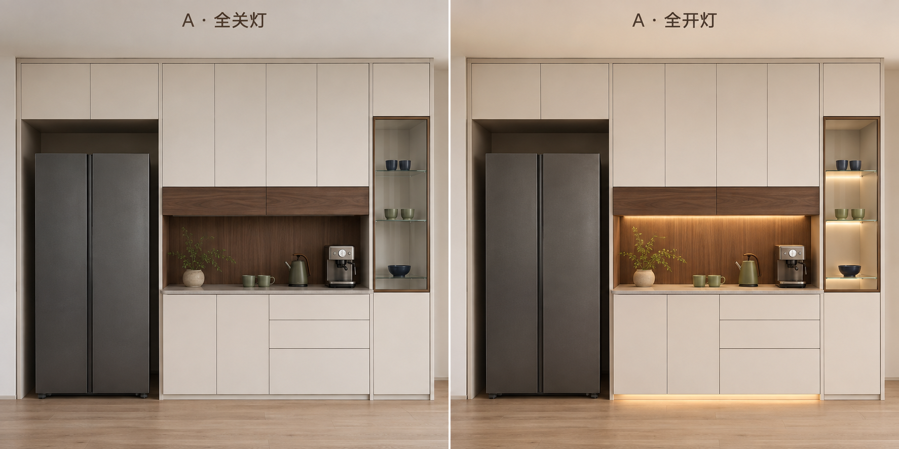
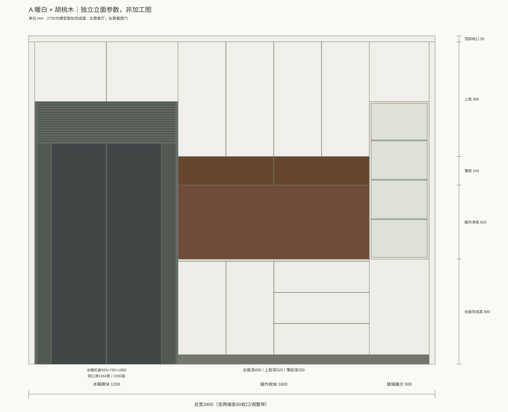
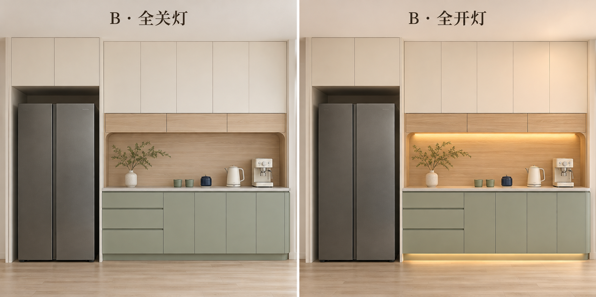
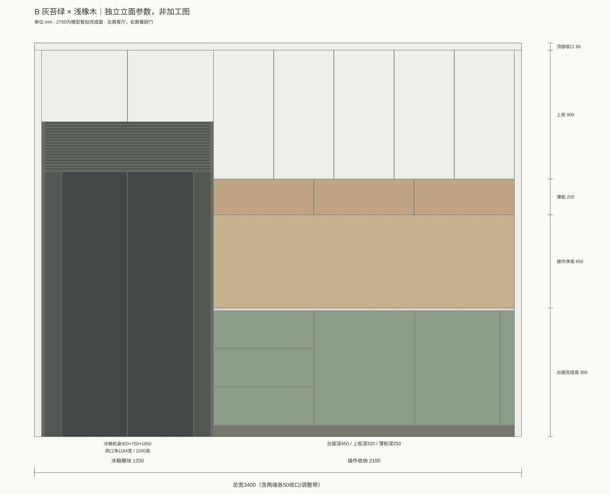
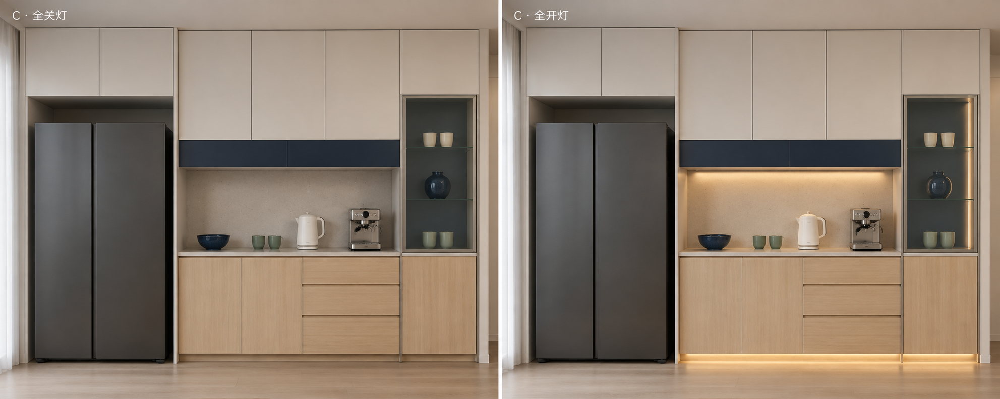
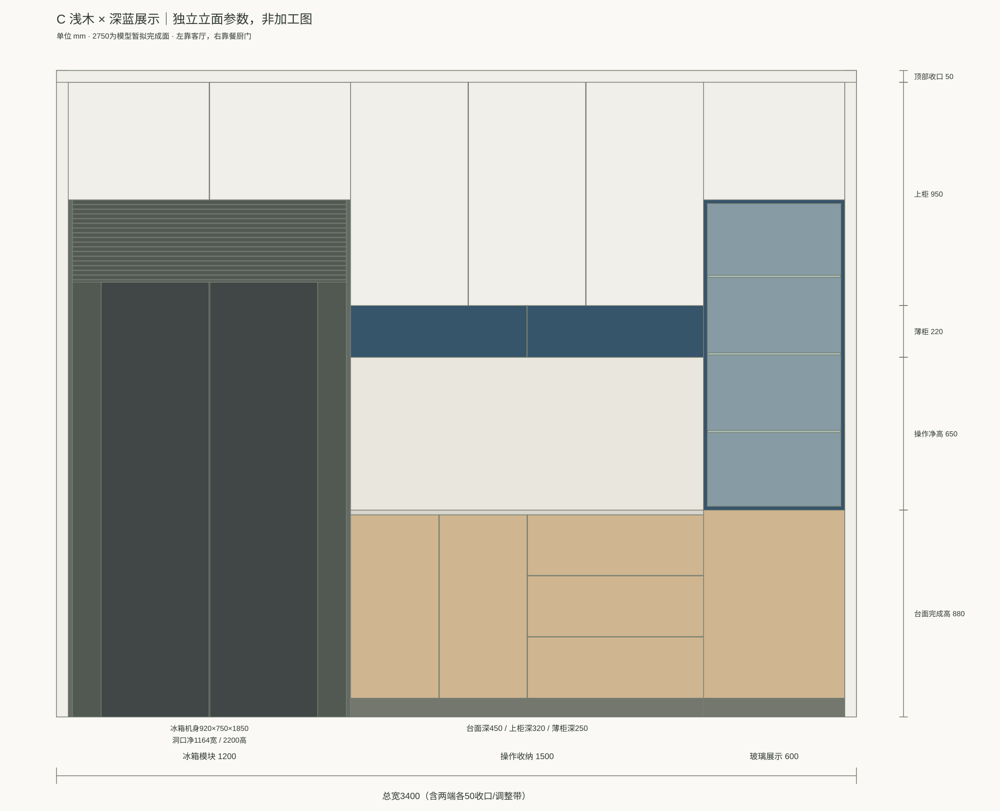
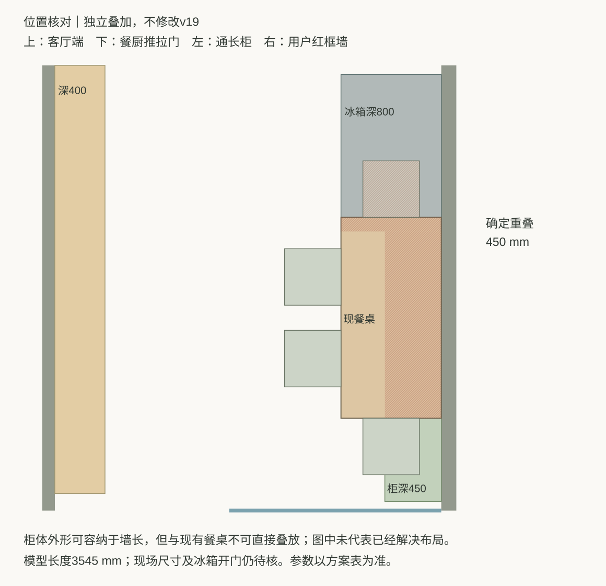

餐边柜，三种表情
餐厅靠客卫外侧的红框墙。沿用暖白、浅木和局部深木的现代日式底色，分别研究胡桃木、灰苔绿与深蓝展示的比例。
v19及既有家具位置、效果图、VR保持不变；没有启动“实装v20”。
三套均按总宽3400 × 暂定高2750 mm；该墙模型长3545 mm，左右外部共余145 mm。标注总宽另含内部两端各50 mm收口调整带，现场完成面校核后重新分配。采用普通左右对开双门冰箱，外露金属机门，未假定为可贴门板的全嵌机。
暖白 × 胡桃木
干净温润，最贴合当前整体

左：全关灯 右：全开灯。同视角、同自然光。图片为AI辅助概念表现；精确分格与尺寸见下方立面。
| 总尺寸 | 宽3400 × 高2750；常规下柜深450，上柜深320，冰箱门前沿总进深约800 |
|---|---|
| 横向分段 | 50＋1200＋1600＋500＋50 mm（从客厅端到餐厨门端） |
| 四段高度 | 下柜完成面880＋操作净高620＋薄柜240＋上柜960＋顶封50 = 2750 |
| 材料与色彩 | 暖白哑光门板、棕灰胡桃木壁龛与薄柜、浅暖灰哑光石英石；展示格用低铁玻璃及细暖灰金属框。 |
| 柜内安排 | 操作区左800双开门＋右800三抽；右侧500展示柜下方封闭。 |
| 弧度 | 台面外露边R40；B的固定端R70、壁龛肩部R120；其余以小圆角和直线为主，不把转角门板做成不可开启的整片 |
| 照明分组 | L1 壁龛工作光1600 mm；L2 展示层板3 × 约460 mm；L3 操作柜低位光1600 mm；长度为设计意向，铝槽及接线端占位另定。 |
| 取舍 | 适合延续现有风格，深木增加层次；木色集中在凹位，避免整面偏暗。 |
查看可放大的尺寸立面

灰苔绿 × 浅橡木
最鲜明的自然日式，柔和有生气

左：全关灯 右：全开灯。同视角、同自然光。图片为AI辅助概念表现；精确分格与尺寸见下方立面。
| 总尺寸 | 宽3400 × 高2750；常规下柜深450，上柜深320，冰箱门前沿总进深约800 |
|---|---|
| 横向分段 | 50＋1200＋2100＋50 mm（从客厅端到餐厨门端） |
| 四段高度 | 下柜完成面900＋操作净高650＋薄柜250＋上柜900＋顶封50 = 2750 |
| 材料与色彩 | 低饱和灰苔绿下柜、暖白上柜、浅橡木壁龛及薄柜、浅灰白哑光石英石；取消玻璃展示，减少视觉碎片。 |
| 柜内安排 | 2100操作区分为700三抽＋700双开门＋600收纳及100固定圆弧端；柜内可调层板。 |
| 弧度 | 台面外露边R40；B的固定端R70、壁龛肩部R120；其余以小圆角和直线为主，不把转角门板做成不可开启的整片 |
| 照明分组 | L1 壁龛工作光2100 mm；L2 圆弧木背板局部柔洗光，与工作光分控；L3 操作柜低位光约2000 mm；长度为设计意向，铝槽及接线端占位另定。 |
| 取舍 | 台面最长、封闭容量最大；绿色成为局部主角，与原绿色餐椅相呼应。 |
查看可放大的尺寸立面

浅木 × 深蓝展示
层次最鲜明，保留轻盈留白

左：全关灯 右：全开灯。同视角、同自然光。图片为AI辅助概念表现；精确分格与尺寸见下方立面。
| 总尺寸 | 宽3400 × 高2750；常规下柜深450，上柜深320，冰箱门前沿总进深约800 |
|---|---|
| 横向分段 | 50＋1200＋1500＋600＋50 mm（从客厅端到餐厨门端） |
| 四段高度 | 下柜完成面880＋操作净高650＋薄柜220＋上柜950＋顶封50 = 2750 |
| 材料与色彩 | 浅橡木下柜、暖白上柜、浅暖灰石英石壁龛；薄柜和600展示格背板使用低饱和深蓝，金属框用暖灰。 |
| 柜内安排 | 操作区750双开门＋750三抽；600展示格下方保留封闭收纳，展示占比控制在整柜约18%。 |
| 弧度 | 台面外露边R40；B的固定端R70、壁龛肩部R120；其余以小圆角和直线为主，不把转角门板做成不可开启的整片 |
| 照明分组 | L1 壁龛工作光1500 mm；L2 展示格侧后方竖向光约1250 mm，层板采用透光玻璃；L3 操作及展示柜低位光2100 mm；长度为设计意向，铝槽及接线端占位另定。 |
| 取舍 | 蓝色集中成一条细竖带及薄柜，适合希望餐厅辨识度更强的情况；少量展示，避免酒柜化。 |
查看可放大的尺寸立面

冰箱及共通细节
| 冰箱体量 | 机身暂按宽920 × 深750 × 高1850。机型未定，属于设计包络，不是“所有常规冰箱”的统一标准。 |
|---|---|
| 冰箱模块 | 外宽1200；两侧18板，净宽1164；洞口净高2200。按上述包络，左右各122、上方350。无柜底板，冰箱落地。侧围板深700，机门前沿距墙约800，突出围板约100以给铰链开门留出空间。 |
| 散热与检修 | 普通机型的半围合，顶部350区域不封死，不在冰箱上方假画“零缝隙”。顶柜自2200以上开始。后方暂留50，最终散热通道、侧距、顶距和抽屉取出角度以所选说明书校核；柜体不能封堵机背及底部进排风。 |
| 下柜与台面 | 下柜深450，台面20厚，板材18，踢脚80高并内退60；柜内净深须扣背板及五金。门缝2 mm是选型目标，施工依材料与系统调整。台面外露边R40；固定外露端局部圆弧，直线为骨架。 |
| 操作电器 | 图中咖啡机、烧水壶为台面用途示意，没有擅自加入蒸烤箱、微波炉、消毒柜或水槽。电器顶盖开启、接水、线缆弯折及散热随型号复核；620–650净高不代表所有机器都适配。 |
| 灯光选型目标 | 3000K统一色温，Ra≥90；灯带藏入带扩散罩的铝槽，遮挡坐姿直视，避免台面高光反射。工作、展示/局部洗墙、低位三组分别调光。驱动器置于可检修柜格，灯槽和散热路径分开。 |
| 电源与使用 | 冰箱电源与台面电源分开安排，插头设在可触及的侧方检修位，不用压在冰箱正后方导致额外突出；具体负荷、保护及插座规格交由实际设备和电气设计确定。 |
柜体放得下，餐桌关系仍须重排
冰箱更深，靠客厅端现有端椅也受影响。此次没有移动餐桌或椅子，下面是诊断叠加图。

模型横向宽3082，试算扣除对侧柜400、餐椅450、餐桌800、柜前操作参考带900、新柜450后，仅余82 mm。因此不能把“餐桌向左挪450”当作已经解决：它只是消除实体重叠，还没有腾出取物、拉椅及通行空间。900是本轮设计试算，不是引用规范。
选定柜体方向后，需要另做餐桌朝向与四椅组合、对侧柜局部范围、柜前取物和冰箱开门的协调研究；沿用此次3400外形也不代表会直接覆盖现位。若坚持全部家具原位，该整面落地餐边柜不能按图直接实装。
参考如何转为本项目设计
参考图中的四段组织、上浅下深、薄柜、三抽及小面积玻璃展示被转化为以上三套；图片上的60 cm深、92 cm高、400×800凳位等不是强制参数，本次没有照搬凳位，也没有改变现有餐厨推拉门。
建议先比较A与B：A最连贯、B的自然气质更明显；C适合希望餐厅有更鲜明的蓝色标记。三者不以预算排序，均未视为业主已选。
- 伊莱克斯ESE6600B-B官方规格：911W×746D×1780H、90度开门深1205，仅为普通对开体量实例，不是已选产品
- 博世KAN系列官方说明书：说明普通机型可要求两侧100、顶部300等较大散热空隙；不能把零嵌尺寸套用到普通机型
- ERCO餐厨照明设计：暖白可调光、区分工作与氛围，控制柜面反射眩光
效果图由内置image_gen生成，用于材质、比例与开关灯氛围判断。尺寸、模块数量与灯槽位置以参数JSON及立面SVG为设计基准；AI画面的细微分缝、比例或光色可能有偏差，不可按图量尺加工。
完整参数JSON 图像提示词与来源